| inline-markup {cli} | R Documentation |
About inline markup in the semantic cli
All text emitted by cli supports glue interpolation. Expressions
enclosed by braces will be evaluated as R code. See glue::glue() for
details.
In addition to regular glue interpolation, cli can also add classes to parts of the text, and these classes can be used in themes. For example
cli_text("This is {.emph important}.")
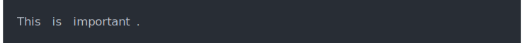
adds a class to the "important" word, class "emph". Note that in this
case the string within the braces is usually not a valid R expression.
If you want to mix classes with interpolation, add another pair of
braces:
adjective <- "great"
cli_text("This is {.emph {adjective}}.")
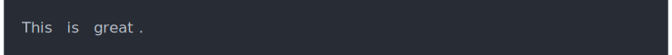
An inline class will always create a span element internally. So in
themes, you can use the span.emph CSS selector to change how inline
text is emphasized:
cli_div(theme = list(span.emph = list(color = "red")))
adjective <- "nice and red"
cli_text("This is {.emph {adjective}}.")
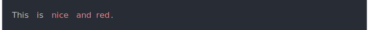
The default theme defines the following inline classes:
arg for a function argument.
cls for an S3, S4, R6 or other class name.
code for a piece of code.
dt is used for the terms in a definition list (cli_dl()).
dd is used for the descriptions in a definition list (cli_dl()).
email for an email address.
emph for emphasized text.
envvar for the name of an environment variable.
field for a generic field, e.g. in a named list.
file for a file name.
fun for a function name.
key for a keyboard key.
path for a path (essentially the same as file).
pkg for a package name.
strong for strong importance.
url for a URL.
var for a variable name.
val for a generic "value".
ul <- cli_ul()
cli_li("{.emph Emphasized} text.")
cli_li("{.strong Strong} importance.")
cli_li("A piece of code: {.code sum(a) / length(a)}.")
cli_li("A package name: {.pkg cli}.")
cli_li("A function name: {.fn cli_text}.")
cli_li("A keyboard key: press {.kbd ENTER}.")
cli_li("A file name: {.file /usr/bin/env}.")
cli_li("An email address: {.email bugs.bunny@acme.com}.")
cli_li("A URL: {.url https://acme.com}.")
cli_li("An environment variable: {.envvar R_LIBS}.")
cli_end(ul)
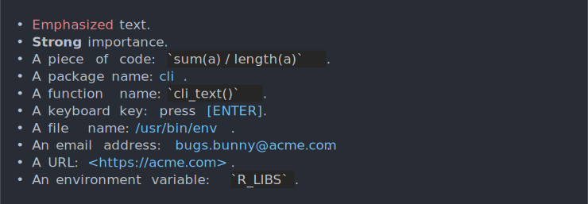
You can add new classes by defining them in the theme, and then using them.
cli_div(theme = list(
span.myclass = list(color = "lightgrey"),
"span.myclass" = list(before = "<<"),
"span.myclass" = list(after = ">>")))
cli_text("This is {.myclass in angle brackets}.")
cli_end()
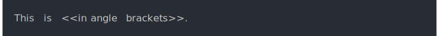
Often it is useful to highlight a weird file or path name, e.g. one
that starts or ends with space characters. The built-in theme does this
for .file, .path and .email by default. You can highlight
any string inline by adding the .q class to it.
The current highlighting algorithm
adds single quotes to the string if it does not start or end with an alphanumeric character, underscore, dot or forward slash.
Highlights the background colors of leading and trailing spaces on terminals that support ANSI colors.
When cli performs inline text formatting, it automatically collapses glue substitutions, after formatting. This is handy to create lists of files, packages, etc.
pkgs <- c("pkg1", "pkg2", "pkg3")
cli_text("Packages: {pkgs}.")
cli_text("Packages: {.pkg {pkgs}}.")
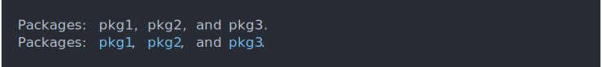
Class names are collapsed differently by default
x <- Sys.time()
cli_text("Hey, {.var x} has class {.cls {class(x)}}.")
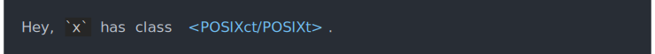
By default cli truncates long vectors. The truncation limit is by default
one hundred elements, but you can change it with the vec_trunc style.
nms <- cli_vec(names(mtcars), list(vec_trunc = 5))
cli_text("Column names: {nms}.")
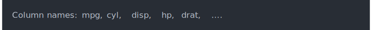
The val inline class formats values. By default (c.f. the built-in
theme), it calls the cli_format() generic function, with the current
style as the argument. See cli_format() for examples.
{ and }It might happen that you want to pass a string to cli_* functions,
and you do not want command substitution in that string, because it
might contain { and } characters. The simplest solution for this is
to refer to the string from a template:
msg <- "Error in if (ncol(dat$y)) {: argument is of length zero"
cli_alert_warning("{msg}")
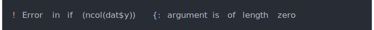
If you want to explicitly escape { and } characters, just double
them:
cli_alert_warning("A warning with {{ braces }}.")
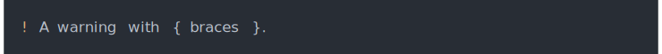
See also examples below.
All cli commands that emit text support pluralization. Some examples:
ndirs <- 1
nfiles <- 13
cli_alert_info("Found {ndirs} diretor{?y/ies} and {nfiles} file{?s}.")
cli_text("Will install {length(pkgs)} package{?s}: {.pkg {pkgs}}")
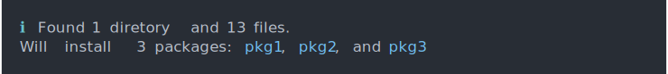
See pluralization for details.
Most cli containers wrap the text to width the container's width, while observing margins requested by the theme.
To avoid a line break, you can use the UTF_8 non-breaking space
character: \u00a0. cli will not break a line here.
To force a line break, insert a form feed character: \f or
\u000c. cli will insert a line break there.